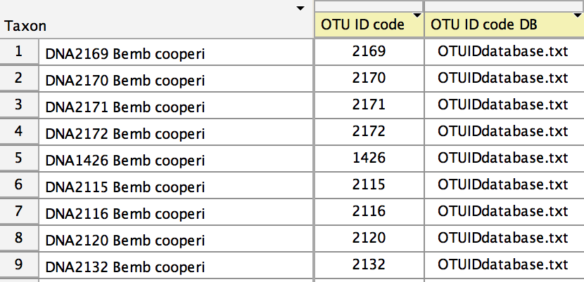
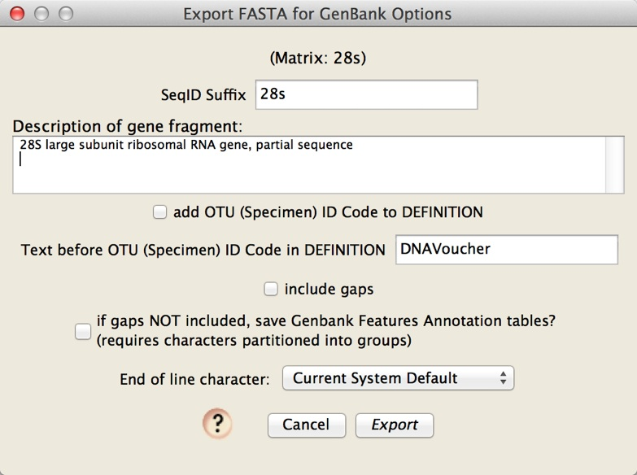

Preparation of files for submission by Sequin
This older system is built to submit sequences from one gene at a time. As Sequin is no longer supported by NCBI, this is a legacy system. The primary tool for submitting sequences using Chromaseq is that which uses tbl2asn.
To prepare files for submission by Sequin, you will need the following:
- A Mesquite file containing your sequences from one gene.
- A tab-delimited text file containing information about each sequence to be submitted. This file contains organism's name, authority, locality data, etc. This is called the "OTU ID code Database" or "OTU ID code DB" file in Mesquite.
The form of the tab-delimited OTU (specimen voucher) ID code file is as follows. The first row must begin with the word "code", followed by a tab-delimited list of the official GenBank names of the fields that appear in each of the later lines. For example, if the fields to be included are the organismal name, the taxonomic authority, the name of the person who identified the specimen, the country (locality) field, the latitude and longitude, and the information identifying the specimen voucher, then this first line would appear as follows:
codeorganism
(The black triangle,  , represents
a tab.)
, represents
a tab.)
The official GenBank names of the fields and the definition of those fields is given on the Modifiers for FASTA Definition Lines page, with more information on the Sequin Help page. You may include whatever fields you need.
On the following lines are the data about the specimens, one line for each specimen. The first item in the line is and ID code. This ID code could be your specimen voucher code, or some other unique identifying string. You will enter these codes in Mesquite for each sequence, which will allow the system to associate the OTU ID code DB information with that particular sequence. The following tab-delimited items in the line are the entries for that particular specimen. For the example file with the header line shown above, here are two lines that contain the information for specimen number 1290, and specimen number 1633:
1290
Each of these lines is shown extending over two lines, but that is only for ease of display on this web page. There are thus a total of three lines in this example OTU ID Code DB file:
code
Creating the FASTA file
Once you have completed the OTU ID code DB file, then in Mesquite open your file containing the sequences, and go to the Taxa List Window (Taxa&Tree>List of Taxa). You will need to show two new columns in this table. Choose Columns>OTU Database and Columns>OTU ID Code. This will show those two columns. Select the entire table (with Select All), and touch on the title of the OTU ID code DB column. A menu will appear in which you can choose to browse for your tab-delimited OTU ID code DB file. Select that file. The OTU ID code DB column should indicate which OTU ID code DB file to use for each sequence. (In this example, all sequences are using the same OTU ID code DB file.)
Now you need to enter into the OTU code ID field the ID codes for each of the sequences. In the example here, the OTU ID code for the first sequence is 1290. This tells Mesquite to look in the OTU ID code DB file for the line whose code is 1290 to get the OTU information for that sequence. To enter ID codes, use the editing tool () select the entry, or select the sequence and use the popup menu that appears when you touch on the OTU ID Code title at the top of the column. Once you have entered all of the OTU ID codes, the Taxa List Window should look something like this:

At this point, you are ready to export a FASTA file with your voucher information contained within it, ready to be imported in Sequin. Do this by choose File>Export, and in the dialog that appears, choose "FASTA (DNA/RNA) for Sequin". You will be queried for options:

Importing the FASTA file into Sequin and submitting your sequences
- Download the latest version of Sequin.
- In the Welcome to Sequin window, press Start New Submission
- In the Submitting Authors window, enter the appropriate information for each of the 4 tabs. If you have more than one gene to submit, we recommend that you click back to the Submission tab, and chose File>Export Submitter Info, and save a file containing the entries. For the next gene, you can then choose File>Import Submitter Info and choose that file, saving you the effort of re-entering those data.
- For standard phylogenetic matrices, in the Sequence Format window, choose Phylogenetic Study, and Sequence data format as FASTA.
- In the Organism and Sequence window, choose Import Nucleotide FASTA
- Struggle with the arcane interface of Sequin to complete your submission.